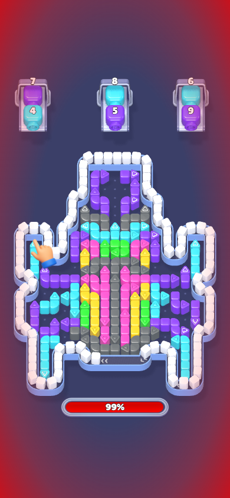
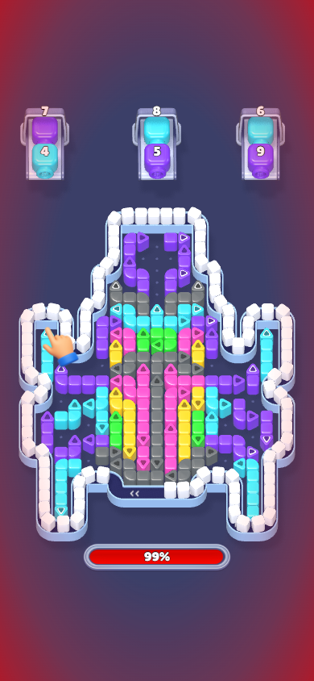

Arrow Flow — color, gloss and shadows
Supplied artist mockup · Same 390×844 viewport below. Existing layout and red full-belt warning preserved.
Before this correction
After correction
Authored approximation of the mockup. Moving belt positions and warning pulse phases differ between captures.